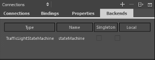

Managing C++ Backend Objects
Many applications provide QObject objects implemented in C++ that work as a bridge between QML and C++. Such objects are typically registered with qmlRegisterType or qmlRegisterSingletonType and then used by QML to communicate with the C++ backend. Another example of such objects are the state machines created by the Qt SCXML Compiler.
Backend objects in a QML file are accessible if the QML file contains the required imports. In addition, for a non-singleton QObject, a dynamic property that contains the QObject must be specified.
A local QObject is instantiated in the current .qml file, as follows:
property MyType myType: MyType {}.
Otherwise the property is just defined, as follows:
property MyType myType
To manage backend objects:
- In the Connections view, select the Backends tab to view accessible backend objects.

- Select the
 (Add) button to add a backend object in the Add New C++ Backend dialog.
(Add) button to add a backend object in the Add New C++ Backend dialog. - In the Type field, select the type of the backend QObject to add.
- Select the Define object locally check box if the QObject is not registered as a singleton.
- Select OK to add the required import and to create the property for a non-singleton object.